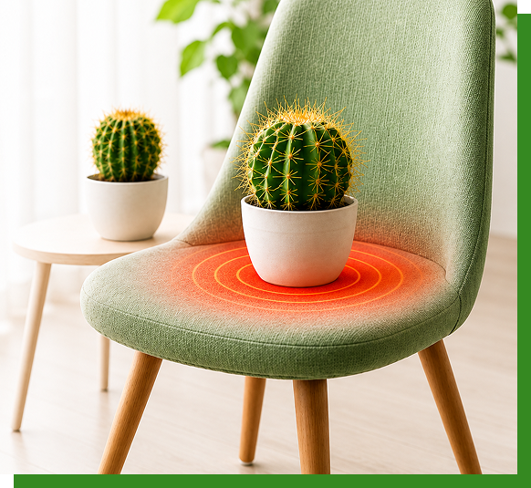

Consultation
Discuss your symptoms and medical history with our specialist.
Difficulty sitting may occur due to pain, swelling, tenderness, or pressure around the anal area. Conditions such as piles, anal fissures, fistula, pilonidal sinus, or other anorectal problems can make prolonged sitting uncomfortable. At Dr. Saraja’s, symptoms are evaluated to identify the underlying cause and recommend appropriate Ayurvedic or minimally invasive care.

Difficulty sitting refers to discomfort, pain, pressure, or tenderness that makes it difficult to sit comfortably for prolonged periods.
The discomfort may become more noticeable while sitting on hard surfaces, after bowel movements, or when pressure is applied to the affected area. It may occur along with swelling, itching, burning, a lump, bleeding, or discharge.
Difficulty sitting is a symptom rather than a diagnosis. Identifying the underlying cause through proper clinical evaluation helps determine the most suitable treatment.
In some cases, the discomfort may be temporary and related to irritation or bowel-related problems. However, persistent or recurring difficulty sitting may indicate an underlying condition that requires proper evaluation.
Identifying the underlying cause is important before deciding the appropriate treatment.
Swollen blood vessels may cause pain, swelling, itching, or discomfort while sitting.
A small tear near the anal opening can cause pain and tenderness, particularly after bowel movements.
An abnormal tract near the anus may cause swelling, pain, or discharge that makes sitting uncomfortable.
A lump or swelling around the anal area may create pressure and discomfort while sitting.
A painful swelling or sinus near the tailbone can make prolonged sitting uncomfortable.
Inflammation around the anal or surrounding area may cause tenderness and pain.
Recognizing associated symptoms can help your doctor understand the possible underlying cause.
The affected area may become painful or uncomfortable when sitting.
The area may feel sore, sensitive, or painful to pressure.
A noticeable swelling or lump may make sitting uncomfortable.
Discomfort may occur along with burning, itching, or irritation.
Some anorectal conditions may cause bleeding during bowel movements.
Discharge or moisture may occur with certain underlying conditions.
Passing stool may increase soreness or discomfort.
Discomfort may continue or become more noticeable after sitting for longer periods.
Repeated or prolonged discomfort may require clinical evaluation.
Difficulty sitting may occur alone or together with other symptoms depending on the underlying anorectal condition.
Pain or Tenderness - The affected area may feel sensitive, sore, or painful particularly when sitting.
Anal Lump or Swelling - A lump or swelling may create pressure and make sitting uncomfortable.
Burning or Irritation - Difficulty sitting may occur along with burning, itching, or irritation.
Pain During Bowel Movements - Passing stool may increase soreness or discomfort.
Bleeding or Discharge - Some anorectal conditions may also cause bleeding, mucus, or abnormal discharge.
Changes in Bowel Habits - Constipation, hard stools, frequent bowel movements, or diarrhoea may contribute to irritation.
From consultation and diagnosis to personalised treatment, recovery, and follow-up, our process is designed around your individual needs. We focus on accurate assessment, comfortable care, and appropriate Ayurvedic or minimally invasive treatment options, with ongoing guidance to support your recovery and long-term anorectal health.
Discuss your symptoms and medical history with our specialist.
A private and appropriate examination helps understand the condition.
The underlying condition and its severity are assessed before recommending treatment.
Treatment is planned according to your individual condition and requirements.
Regular guidance helps monitor recovery and maintain long-term anorectal health.
Difficulty sitting can have different underlying causes, so treatment is tailored to the condition identified during clinical evaluation. The recommended approach may vary depending on the symptoms, severity, and individual needs.
Proper evaluation helps identify the cause and guide suitable care, which may include Ayurvedic treatment, medicines, lifestyle and bowel-habit changes, local care, or minimally invasive procedures when required.
Treatment is tailored to your individual needs, with guidance on bowel habits and lifestyle, appropriate therapeutic care, and regular follow-up to monitor symptoms and recovery.
These general measures may help reduce irritation and support healthy bowel habits.
A burning or stinging feeling that becomes noticeable while passing stool.
Adequate fluid intake can support softer stools and healthy bowel function.
Include appropriate fibre-rich foods to support regular bowel movements.
Try to avoid prolonged sitting and excessive straining during bowel movements.
Notice whether particular foods or drinks appear to worsen irritation.
Repeated or persistent burning should be evaluated by a qualified healthcare professional.
Make an appointment and get expert guidance for your condition.
Once the underlying cause of your symptoms is evaluated, we recommend a suitable treatment approach based on your individual needs.
Personalized Ayurvedic treatment based on clinical evaluation.
Appropriate procedures may be considered when required.
Practical guidance to support healthy bowel habits.
Continued guidance throughout your recovery.
We combine ancient Ayurvedic wisdom with modern technology to deliver safe,
effective, and lasting results.
20+ years of expertise in Ayurvedic healthcare.
USFDA-approved laser equipment for better outcomes.
Comfortable treatments with faster recovery.
Recover faster with effective fistula treatment.
Personalized care tailored to your needs.
Quality care with transparent pricing and no hidden costs.

Chief Ayurvedic Proctologist & Kshara Sutra Specialist

Flat No. 302, Abhinandana Jewel, Lanco Hills Road, Opp. HP Gas Godown, Shivapuri Colony, Muppas Panchavati Colony, Manikonda, Hyderabad, Telangana - 500089

Metro Pillar No. 817, People's Hospital Complex, 3rd Floor, Beside Narayana Junior College, KPHB, Kukatpally, Hyderabad, Telangana - 500072
Discover the heartwarming healing journeys of our patients at Dr. Saraja’s Ayurvedic Anorectal Hospital. Their experiences reflect our commitment to personalised Ayurvedic care, compassionate treatment, and lasting healing.
The treatment was simple, comfortable and the doctor explained every step clearly. I feel much better now.
NareshGoogle ReviewProfessional consultation and good follow-up. I would recommend the clinic to anyone looking for expert care.
RameshGoogle ReviewThe treatment was simple, comfortable and the doctor explained every step clearly. I feel much better now.
PrasadGoogle ReviewProfessional consultation and good follow-up. I would recommend the clinic to anyone looking for expert care.
GopiGoogle ReviewSpeak with our care team and schedule a private consultation at your preferred
Hyderabad centre.